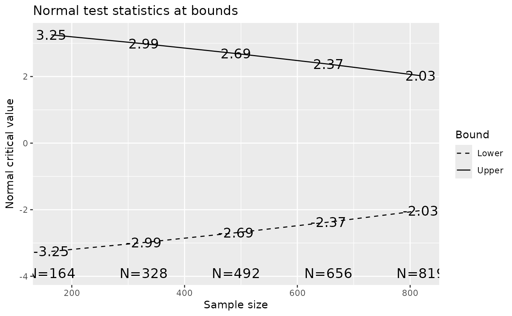
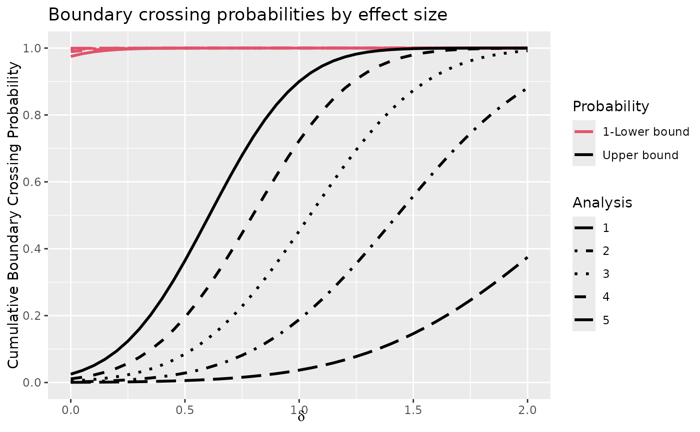
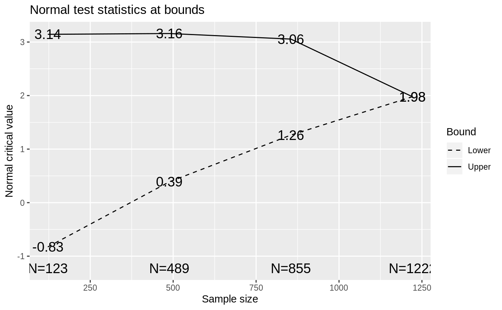

Design Derivation
gsDesign.RdgsDesign() is used to find boundaries and trial size required for a
group sequential design.
Many parameters normally take on default values and thus do not require
explicit specification. One- and two-sided designs are supported. Two-sided
designs may be symmetric or asymmetric. Wang-Tsiatis designs, including
O'Brien-Fleming and Pocock designs can be generated. Designs with common
spending functions as well as other built-in and user-specified functions
for Type I error and futility are supported. Type I error computations for
asymmetric designs may assume binding or non-binding lower bounds. The print
function has been extended using print.gsDesign() to print
gsDesign objects; see examples.
The user may ignore the structure of the value returned by gsDesign()
if the standard printing and plotting suffice; see examples.
delta and n.fix are used together to determine what sample
size output options the user seeks. The default, delta=0 and
n.fix=1, results in a ‘generic’ design that may be used with
any sampling situation. Sample size ratios are provided and the user
multiplies these times the sample size for a fixed design to obtain the
corresponding group sequential analysis times. If delta>0,
n.fix is ignored, and delta is taken as the standardized
effect size - the signal to noise ratio for a single observation; for
example, the mean divided by the standard deviation for a one-sample normal
problem. In this case, the sample size at each analysis is computed. When
delta=0 and n.fix>1, n.fix is assumed to be the sample
size for a fixed design with no interim analyses. See examples below.
Following are further comments on the input argument test.type which
is used to control what type of error measurements are used in trial design.
The manual may also be worth some review in order to see actual formulas for
boundary crossing probabilities for the various options. Options 3 and 5
assume the trial stops if the lower bound is crossed for Type I and Type II
error computation (binding lower bound). For the purpose of computing Type
I error, options 4 and 6 assume the trial continues if the lower bound is
crossed (non-binding lower bound); that is a Type I error can be made by
crossing an upper bound after crossing a previous lower bound.
Beta-spending refers to error spending for the lower bound crossing
probabilities under the alternative hypothesis (options 3 and 4). In this
case, the final analysis lower and upper boundaries are assumed to be the
same. The appropriate total beta spending (power) is determined by adjusting
the maximum sample size through an iterative process for all options. Since
options 3 and 4 must compute boundary crossing probabilities under both the
null and alternative hypotheses, deriving these designs can take longer than
other options. Options 5 and 6 compute lower bound spending under the null
hypothesis.
gsDesign( k = 3, test.type = 4, alpha = 0.025, beta = 0.1, astar = 0, delta = 0, n.fix = 1, timing = 1, sfu = sfHSD, sfupar = -4, sfl = sfHSD, sflpar = -2, tol = 1e-06, r = 18, n.I = 0, maxn.IPlan = 0, nFixSurv = 0, endpoint = NULL, delta1 = 1, delta0 = 0, overrun = 0, usTime = NULL, lsTime = NULL )
Arguments
| k | Number of analyses planned, including interim and final. |
|---|---|
| test.type |
|
| alpha | Type I error, always one-sided. Default value is 0.025. |
| beta | Type II error, default value is 0.1 (90% power). |
| astar | Normally not specified. If |
| delta | Effect size for theta under alternative hypothesis. This can be
set to the standardized effect size to generate a sample size if
|
| n.fix | Sample size for fixed design with no interim; used to find
maximum group sequential sample size. For a time-to-event outcome, input
number of events required for a fixed design rather than sample size and
enter fixed design sample size (optional) in |
| timing | Sets relative timing of interim analyses. Default of 1
produces equally spaced analyses. Otherwise, this is a vector of length
|
| sfu | A spending function or a character string indicating a boundary
type (that is, “WT” for Wang-Tsiatis bounds, “OF” for
O'Brien-Fleming bounds and “Pocock” for Pocock bounds). For
one-sided and symmetric two-sided testing is used to completely specify
spending ( |
| sfupar | Real value, default is \(-4\) which is an
O'Brien-Fleming-like conservative bound when used with the default
Hwang-Shih-DeCani spending function. This is a real-vector for many spending
functions. The parameter |
| sfl | Specifies the spending function for lower boundary crossing
probabilities when asymmetric, two-sided testing is performed
( |
| sflpar | Real value, default is \(-2\), which, with the default Hwang-Shih-DeCani spending function, specifies a less conservative spending rate than the default for the upper bound. |
| tol | Tolerance for error (default is 0.000001). Normally this will not be changed by the user. This does not translate directly to number of digits of accuracy, so use extra decimal places. |
| r | Integer value controlling grid for numerical integration as in
Jennison and Turnbull (2000); default is 18, range is 1 to 80. Larger
values provide larger number of grid points and greater accuracy. Normally
|
| n.I | Used for re-setting bounds when timing of analyses changes from initial design; see examples. |
| maxn.IPlan | Used for re-setting bounds when timing of analyses changes from initial design; see examples. |
| nFixSurv | If a time-to-event variable is used, |
| endpoint | An optional character string that should represent the type
of endpoint used for the study. This may be used by output functions. Types
most likely to be recognized initially are "TTE" for time-to-event outcomes
with fixed design sample size generated by |
| delta1 |
|
| delta0 |
|
| overrun | Scalar or vector of length |
| usTime | Default is NULL in which case upper bound spending time is
determined by |
| lsTime | Default is NULL in which case lower bound spending time is
determined by |
Value
An object of the class gsDesign. This class has the following
elements and upon return from gsDesign() contains:
As input.
As input.
As input.
As input.
As input, except when test.type=5 or 6
and astar is input as 0; in this case astar is changed to
1-alpha.
The standardized effect size for which the
design is powered. Will be as input to gsDesign() unless it was input
as 0; in that case, value will be computed to give desired power for fixed
design with input sample size n.fix.
Sample size
required to obtain desired power when effect size is delta.
A vector of length k containing the portion of the
total planned information or sample size at each analysis.
As input.
As input.
Vector of length k. If values
are input, same values are output. Otherwise, n.I will contain the
sample size required at each analysis to achieve desired timing and
beta for the output value of delta. If delta=0 was
input, then this is the sample size required for the specified group
sequential design when a fixed design requires a sample size of
n.fix. If delta=0 and n.fix=1 then this is the relative
sample size compared to a fixed design; see details and examples.
As input.
As input.
Sample
size for Lachin and Foulkes method when nSurvival is used for fixed
design input. If nSurvival is used to compute n.fix, then
nFixSurv is inflated by the same amount as n.fix and stored in
nSurv. Note that if you use gsSurv for time-to-event sample
size, this is not needed and a more complete output summary is given.
As input.
As input.
As input.
As input.
As input.
As input.
Upper bound spending function, boundary and boundary crossing probabilities under the NULL and alternate hypotheses. See Spending_Function_Overview and manual for further details.
Lower bound spending function, boundary and boundary
crossing probabilities at each analysis. Lower spending is under alternative
hypothesis (beta spending) for test.type=3 or 4. For
test.type=2, 5 or 6, lower spending is under the null
hypothesis. For test.type=1, output value is NULL. See
Spending_Function_Overview and manual.
Standarized
effect size under null (0) and alternate hypothesis. If delta is
input, theta[1]=delta. If n.fix is input, theta[1] is
computed using a standard sample size formula (pseudocode):
((Zalpha+Zbeta)/theta[1])^2=n.fix.
For
test.type=4 or 6, this contains false positive probabilities
under the null hypothesis assuming that crossing a futility bound does not
stop the trial.
Expected sample size accounting for early
stopping. For time-to-event outcomes, this would be the expected number of
events (although gsSurv will give expected sample size). For
information-based-design, this would give the expected information when the
trial stops. If overrun is specified, the expected sample size
includes the overrun at each interim.
Note
The manual is not linked to this help file, but is available in library/gsdesign/doc/gsDesignManual.pdf in the directory where R is installed.
References
Jennison C and Turnbull BW (2000), Group Sequential Methods with Applications to Clinical Trials. Boca Raton: Chapman and Hall. Lan KK, DeMets DL (1989). Group sequential procedures: calendar versus information time. Statistics in medicine 8(10):1191-8. Liu, Q, Lim, P, Nuamah, I, and Li, Y (2012), On adaptive error spending approach for group sequential trials with random information levels. Journal of biopharmaceutical statistics; 22(4), 687-699.
See also
gsDesign package overview, gsBoundSummary,
plot.gsDesign,
gsProbability, Spending_Function_Overview,
Examples
library(ggplot2) # symmetric, 2-sided design with O'Brien-Fleming-like boundaries # lower bound is non-binding (ignored in Type I error computation) # sample size is computed based on a fixed design requiring n=800 x <- gsDesign(k = 5, test.type = 2, n.fix = 800) # note that "x" below is equivalent to print(x) and print.gsDesign(x) x#> Symmetric two-sided group sequential design with #> 90 % power and 2.5 % Type I Error. #> Spending computations assume trial stops #> if a bound is crossed. #> #> #> Analysis N Z Nominal p Spend #> 1 164 3.25 0.0006 0.0006 #> 2 328 2.99 0.0014 0.0013 #> 3 492 2.69 0.0036 0.0028 #> 4 656 2.37 0.0088 0.0063 #> 5 819 2.03 0.0214 0.0140 #> Total 0.0250 #> #> ++ alpha spending: #> Hwang-Shih-DeCani spending function with gamma = -4. #> #> Boundary crossing probabilities and expected sample size #> assume any cross stops the trial #> #> Upper boundary (power or Type I Error) #> Analysis #> Theta 1 2 3 4 5 Total E{N} #> 0.0000 0.0006 0.0013 0.0028 0.0063 0.0140 0.025 812.8 #> 0.1146 0.0370 0.1512 0.2647 0.2699 0.1771 0.900 589.3 #> #> Lower boundary (futility or Type II Error) #> Analysis #> Theta 1 2 3 4 5 Total #> 0.0000 6e-04 0.0013 0.0028 0.0063 0.014 0.025 #> 0.1146 0e+00 0.0000 0.0000 0.0000 0.000 0.000plot(x)# Assuming after trial was designed actual analyses occurred after # 300, 600, and 860 patients, reset bounds y <- gsDesign( k = 3, test.type = 2, n.fix = 800, n.I = c(300, 600, 860), maxn.IPlan = x$n.I[x$k] ) y#> Symmetric two-sided group sequential design with #> 90 % power and 2.5 % Type I Error. #> Spending computations assume trial stops #> if a bound is crossed. #> #> #> Analysis N Z Nominal p Spend #> 1 300 2.96 0.0016 0.0016 #> 2 600 2.44 0.0074 0.0067 #> 3 860 2.01 0.0220 0.0167 #> Total 0.0250 #> #> ++ alpha spending: #> Hwang-Shih-DeCani spending function with gamma = -4. #> #> Boundary crossing probabilities and expected sample size #> assume any cross stops the trial #> #> Upper boundary (power or Type I Error) #> Analysis #> Theta 1 2 3 Total E{N} #> 0.0000 0.0016 0.0067 0.0167 0.0250 854.8 #> 0.1146 0.1655 0.4833 0.2654 0.9142 641.6 #> #> Lower boundary (futility or Type II Error) #> Analysis #> Theta 1 2 3 Total #> 0.0000 0.0016 0.0067 0.0167 0.025 #> 0.1146 0.0000 0.0000 0.0000 0.000# asymmetric design with user-specified spending that is non-binding # sample size is computed relative to a fixed design with n=1000 sfup <- c(.033333, .063367, .1) sflp <- c(.25, .5, .75) timing <- c(.1, .4, .7) x <- gsDesign( k = 4, timing = timing, sfu = sfPoints, sfupar = sfup, sfl = sfPoints, sflpar = sflp, n.fix = 1000 ) x#> Asymmetric two-sided group sequential design with #> 90 % power and 2.5 % Type I Error. #> Upper bound spending computations assume #> trial continues if lower bound is crossed. #> #> ----Lower bounds---- ----Upper bounds----- #> Analysis N Z Nominal p Spend+ Z Nominal p Spend++ #> 1 123 -0.83 0.2041 0.025 3.14 0.0008 0.0008 #> 2 489 0.39 0.6513 0.025 3.16 0.0008 0.0008 #> 3 855 1.26 0.8966 0.025 3.06 0.0011 0.0009 #> 4 1222 1.98 0.9761 0.025 1.98 0.0239 0.0225 #> Total 0.1000 0.0250 #> + lower bound beta spending (under H1): #> User-specified spending function with Points = 0.25 0.5 0.75 1. #> ++ alpha spending: #> User-specified spending function with Points = 0.033333 0.063367 0.1 1. #> #> Boundary crossing probabilities and expected sample size #> assume any cross stops the trial #> #> Upper boundary (power or Type I Error) #> Analysis #> Theta 1 2 3 4 Total E{N} #> 0.0000 0.0008 0.0007 0.0009 0.0177 0.0202 564.0 #> 0.1025 0.0222 0.1716 0.2969 0.4094 0.9000 907.4 #> #> Lower boundary (futility or Type II Error) #> Analysis #> Theta 1 2 3 4 Total #> 0.0000 0.2041 0.4703 0.2361 0.0693 0.9798 #> 0.1025 0.0250 0.0250 0.0250 0.0250 0.1000plot(x)# same design, but with relative sample sizes gsDesign( k = 4, timing = timing, sfu = sfPoints, sfupar = sfup, sfl = sfPoints, sflpar = sflp )#> Asymmetric two-sided group sequential design with #> 90 % power and 2.5 % Type I Error. #> Upper bound spending computations assume #> trial continues if lower bound is crossed. #> #> Sample #> Size ----Lower bounds---- ----Upper bounds----- #> Analysis Ratio* Z Nominal p Spend+ Z Nominal p Spend++ #> 1 0.122 -0.83 0.2041 0.025 3.14 0.0008 0.0008 #> 2 0.488 0.39 0.6513 0.025 3.16 0.0008 0.0008 #> 3 0.855 1.26 0.8966 0.025 3.06 0.0011 0.0009 #> 4 1.221 1.98 0.9761 0.025 1.98 0.0239 0.0225 #> Total 0.1000 0.0250 #> + lower bound beta spending (under H1): #> User-specified spending function with Points = 0.25 0.5 0.75 1. #> ++ alpha spending: #> User-specified spending function with Points = 0.033333 0.063367 0.1 1. #> * Sample size ratio compared to fixed design with no interim #> #> Boundary crossing probabilities and expected sample size #> assume any cross stops the trial #> #> Upper boundary (power or Type I Error) #> Analysis #> Theta 1 2 3 4 Total E{N} #> 0.0000 0.0008 0.0007 0.0009 0.0177 0.0202 0.5640 #> 3.2415 0.0222 0.1716 0.2969 0.4094 0.9000 0.9074 #> #> Lower boundary (futility or Type II Error) #> Analysis #> Theta 1 2 3 4 Total #> 0.0000 0.2041 0.4703 0.2361 0.0693 0.9798 #> 3.2415 0.0250 0.0250 0.0250 0.0250 0.1000